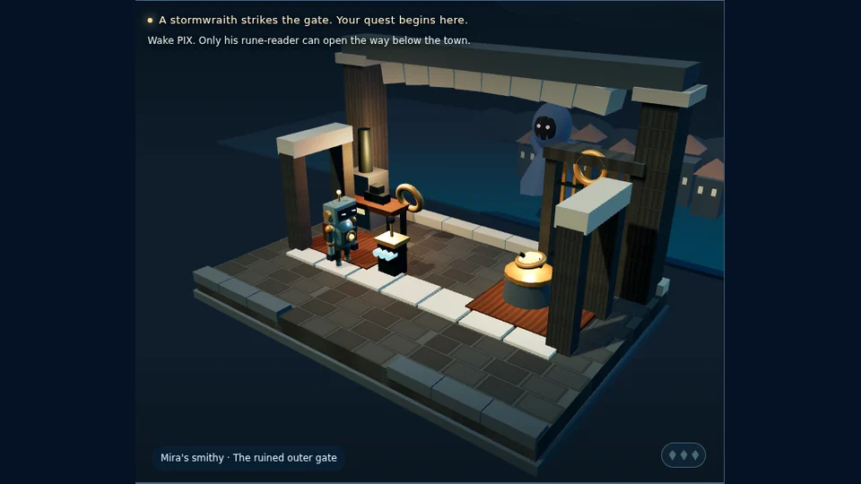
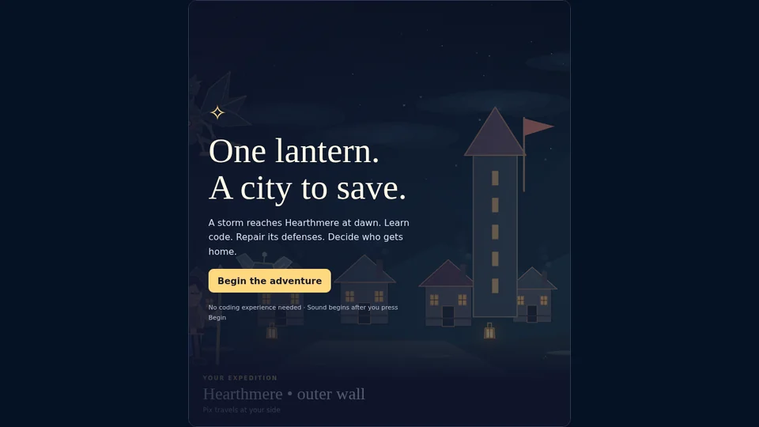
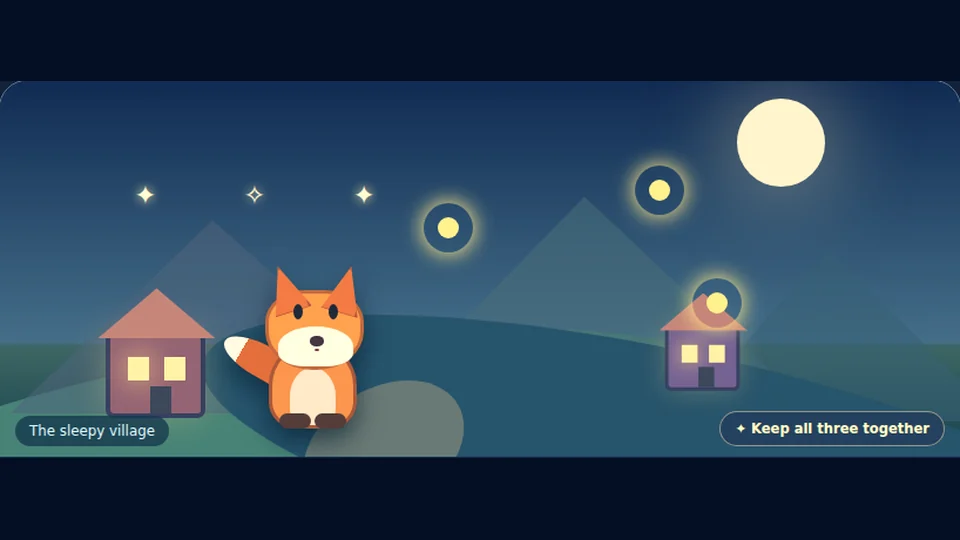
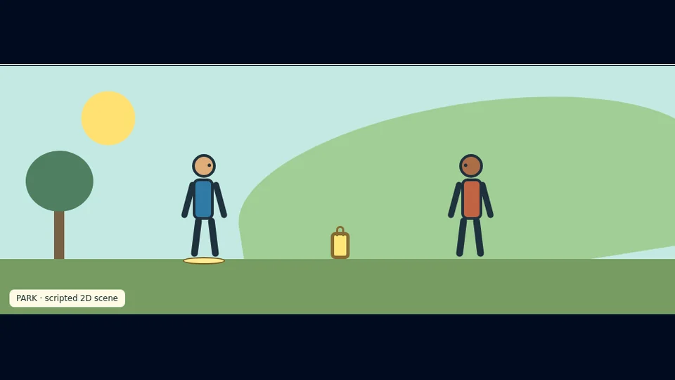

GAME 002 · GUIDED CODING ADVENTURE
Code Quest The Stoneward Oath
Restore a storm-battered town through dungeon routes, creature encounters, and code that actually solves the challenges.
✦ KIRA LABS / THE ARCADE
Choose your world, meet memorable characters, and play your way through stories that teach real coding skills along the way.
Four original games · Free to play · No signup · Voice and sound options inside supported games

ACTUAL GAME SCENE
Circuitbound
Firefly TrailScreens captured from the playable games; glowing movement is decorative.
● CHOOSE YOUR WORLD
From fantasy quests to lantern puzzles, every game has a story to explore. No programming experience is required to start.
GAME 002 · GUIDED CODING ADVENTURE
Restore a storm-battered town through dungeon routes, creature encounters, and code that actually solves the challenges.
GAME 004 · BRANCHING ADVENTURE
Join Pix in Hearthmere, solve sensor and circuit puzzles, restore the lantern network, and shape four different endings.

STORY + CHOICESGAME 001 · BEGINNER STORY
Mira and Sol discover an old lantern. Make choices, share its light, and experience two possible endings.
GAME 003 · STORY + LOGIC
Follow Wisp the fox through changing scenery, rescue glowing fireflies, solve river puzzles, and restore a mountain beacon.
These are screenshots of actual game stages—not looping gameplay videos. The cards use subtle decorative animation; the games themselves contain their own interactive scenes.
✦ YOUR ARCADE PASSPORT
Collect small explorer badges as you launch games and visit tutorials from this page. No account, leaderboard, or pretend completion scores.
Saved only in this browser. Visiting a game is not the same as completing it.
● FROM PLAYER TO CREATOR
Curious about how the stories work? Learn to build real playable games with code you can copy, edit, and run yourself.
Learn HTML, CSS and JavaScript while making a complete interactive game.
Open the lessons → MAKE STORIES INTERACTIVEExplore scene changes, dialogue, branching choices, and multiple endings.
See the story tutorial → PLAYABLE SOURCE INCLUDEDStudy Wisp's moving scenery and see how a little code creates a larger journey.
Explore the source →Made at Kira Labs. These are original scripted games and educational projects—not a demonstration of NewBrain or an autonomous AI.
More Kira Labs tools and apps →